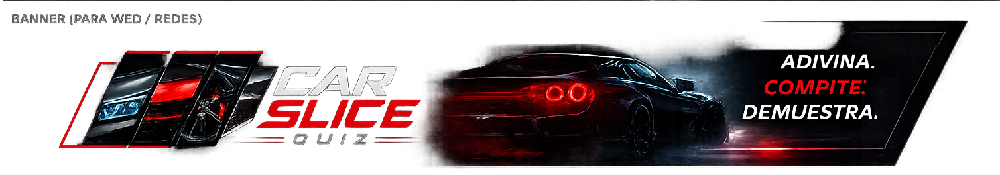

Clásico
Rondas infinitas hasta fallar. Buena para aprender modelos sin presión.

Quiz de coches por detalles, faros, llantas, morros y pura intuición.
Base de datos real activada: el login, perfil, ranking y partidas usan Supabase. Si Supabase falla, no se inicia sesión local automáticamente.
Nada de empezar directamente: selecciona el tipo de partida, dificultad y entra al reto cuando quieras.
Mismo coche para todos hoy.
Rondas infinitas hasta fallar. Buena para aprender modelos sin presión.
Único modo con temporizador. Termina al fallar o al agotarse el tiempo.
Infinito hasta fallar con recortes más agresivos: faro, llanta y parrilla.
Elige una familia: JDM, Europeos, Rally, clásicos, compactos deportivos o supercars.
Todos los jugadores reciben el mismo coche durante el día. La puntuación se guarda en el ranking daily.
Esto solo borra datos del navegador, no de Supabase.
El juego te enseña una parte del coche. Escribe marca y modelo. Todos los modos son infinitos hasta fallar, salvo Contrarreloj, que además termina cuando se acaba el tiempo.
Las pistas quitan puntos. La imagen completa cuesta 100 puntos. Al fallar siempre se revela la foto completa.
Las fotos se cargan desde Wikimedia/Wikipedia y se validan antes de mostrar ronda para evitar imágenes rotas.
Enter responde. Desde cualquier partida puedes volver a Modos. El autocompletado solo muestra marcas y modelos que empiezan por lo escrito.